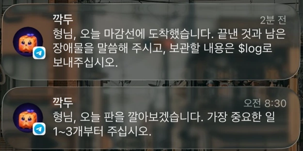

남기고 싶었던 건
활동보다 그때의 판단
“무엇을 했지?”뿐 아니라
“왜 그렇게 결정했지?”에도 답하고 싶었습니다.
나를 이해하고 개선할 점을 찾으려면 당시의 맥락이 필요했습니다. 하지만 매번 기억을 더듬어 글로 정리하는 일은 부담스러웠습니다. 그래서 이미 만들어지는 활동과 대화를 기록의 출발점으로 삼았습니다.
대화가 끝나도
맥락은 남도록
더 좋은 모델도 제 경험과 판단 배경을 처음부터 알지는 못합니다. 특정 대화 안에만 기록을 남기지 않고, 관련 자료를 찾아 새 대화에 다시 제공할 수 있는 저장소를 만들고자 했습니다.
다시 찾아서, 다시 설명
과거 대화와 자료를 따로 확인해
필요한 배경을 모아야 합니다.
주제와 출처를 함께 참조
관련 기록을 찾아
다음 질문의 근거로 제공할 수 있습니다.
Karpathy의 LLM Wiki 패턴을 참고해 Obsidian의 Markdown 문서를 저장소로 삼고, 개인 기록 분류와 입력·저장 흐름을 확장했습니다. 새 모델이 자동으로 저를 학습하는 구조는 아닙니다.
참고한 원형: Andrej Karpathy — LLM Wiki ↗계속 쌓기 전에,
수집 방식부터 변경
Screenpipe
Mac 화면 활동 기록
- 저장 용량에 대한 부담
- 원했던 세부 맥락을 찾기 어려움
Codex Computer History
활동 요약 + Codex 작업 기록
- 작업 기록을 주 근거로 사용
- 저장된 활동 요약으로 보완
화면 활동과 회의 녹음은 담고 있는 맥락이 달라 입력 경로를 구분했습니다.
사용하면서 느낀 제약을 바탕으로 방식을 바꿨습니다. 전환 후의 용량 감소나 정리 시간 절감은 측정하지 않았습니다.
원본, 하루, 지식은
다르게 관리
Raw/원본을 보존
회의 녹음·자료·원문
해석으로 원본을 덮어쓰지 않음
Daily/그날의 맥락을 기록
계획 · 관찰 · 결정 · 실행 · 다음 행동
하려던 일과 끝낸 일을 구분
Wiki/주제별 지식을 연결
Sources · Concepts · Projects · INDEX
관련 기록과 출처를 함께 참조
log대화 → 하루의 기록판단·이유·결과·남은 일을 Daily에
ingest자료 → 연결된 지식출처·목적·관련 맥락을 확인해 Wiki에
모든 Daily를 자동으로 Wiki에 옮기지는 않습니다. 필요한 맥락이 없으면 질문하고, 다시 활용할 자료를 별도로 정리합니다.
AI가 모르는 이유는
사람에게 질문
{kind=link}

화면에서 페이지를 열었다고 작업을 끝낸 것은 아닙니다. 관찰한 활동, 사용자가 말한 판단, 확인된 결과를 구분하는 기준을 두었습니다.
챗봇의 Wiki 저장은 확인 후에
- 01초안 확인미리보기·사용자 승인
- 02파일 대조해시가 다르면 충돌 처리
- 03반영 재확인쓰기 전 확인·저장 후 읽기
저장 검증의 범위와 한계
승인한 초안을 만드는 단계와 실제 로컬 파일에 반영하는 단계를 나눴습니다. 해시 비교와 저장 후 읽기는 기존 기록을 잘못 덮어쓰는 위험을 다룹니다. 내용이 사실과 의도를 정확히 담았는지는 별도로 검토해야 합니다. Telegram은 데스크톱 ingest와 처리 범위가 다르며, 알림 수신만으로 Wiki 저장 완료를 판단하지 않습니다.
저장한 자료를
다음 작업의 근거로
포트폴리오를 준비하며 Wiki에 저장한 AI 개발 워크플로우 영상의 정리와 자막을 다시 확인했습니다. HASHI의 실제 문서·코드와 대조해 구현한 범위와 앞으로의 과제를 구분하는 데 활용했습니다.
기록 분류·정리 지침과 자동화·동기화 구현을 마련하고, 저장된 자료를 다시 찾아 사례 검토에 사용했습니다.
필요한 근거를 잘 찾는지, 중요한 판단이 요약에서 빠지지 않는지, 장기 운영이 안정적인지 확인하고 있습니다.
모델이 달라져도 맥락을 충분히 전달할 수 있는지는 후속 검증 과제입니다. 시간·비용 절감률이나 장기 운영 안정성을 달성 성과로 제시하지 않습니다.